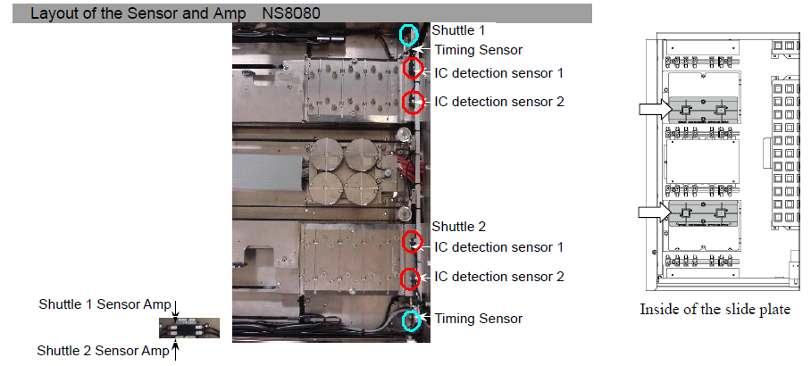
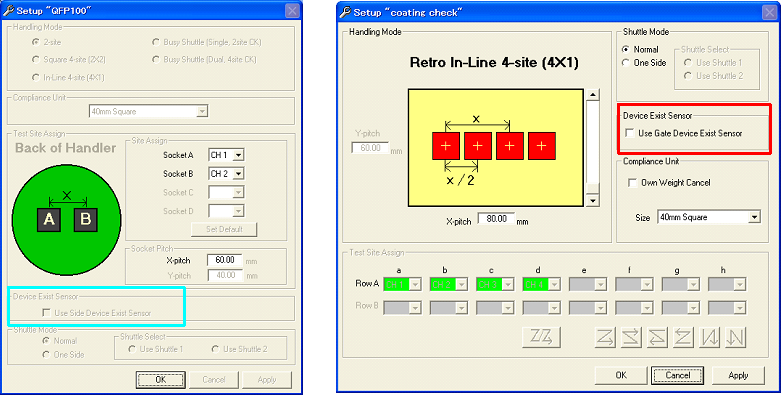
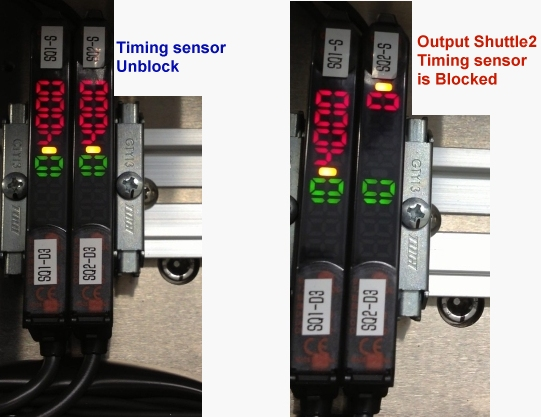

Service History
Subject: NS-8080 setup with NS-6040 change kit (Retro fit kit)
Handler Model: NS-8080
Controller: RC520
Date: 21 Aug 2009
Symptom
if installing NS6k changekit into NS-8080, if output shuttle w/o through holes, do we need to enable or disable "Device exist sensor" in HMI [Deviceset] ->[Setup]?
Current buyoff in ASE, if enable "Device exist sensor" for output shuttle w/o through holes during initial start handler will give intial start error(unloading side).
Condition now is running output shuttle w/o through holes and disable "Device exist sensor" function.
We find out HMI [Maintenance]->[Controller]->maintenance "checking the IC detection sensor of the unloading side Shuttle" unable to give proper display of device condition.
See following situation:
Output shuttle w/o through holes
1)"Device exist sensor" in HMI setup disabled.
2) Followed procedures in adjusting the IC Detection Sensor of the Unloading side Shuttle from Handler Manual.
- no device on shuttle result show O
- device on shuttle result show X
We had also tried on Quad site changekit, scenario also the same.
Currently ASE NS-8080 is installed with HMI v2.2sp. Previously had tired HMI v2.0 in other customer site is OK.
Can you check with EPSON is there anything wrong with this software?
Action
1. Device exist sensor:
Different selection for NS-7000 and NS-8080
This is some of history.
NS-7000 case:
- First concept for retrofit kit.
NS-6000 Change Kit support retrofit kit with sensor holes.
- Device exist sensor is "Gate type" is standard.
- Thereafter retrofit kit support "without sensor holes".
- So, Side sensor is selected by "check box" on the NS-7000
NS-8000 case
- NS-6000 Change Kit support retrofit kit without sensor holes.
- Device exist sensor is "Side type" is standard.
- So, Gate sensor is selected by "check box" on the NS-8000
Please understand the situation.
2. - no device on shuttle result show We will be changed manual
information.
So, no device on shuttle result show "O"
Device on shuttle result show "X"
This is correct condition for NS-8080.
Device exist sensor information(Retrofit kit)

|
Gate Sensor |
|
|
Side Sensor |

NS-7000 Setup file NS-8000 Setup file
Condition : Both of handler use device exist sensor on side sensor during retrofit kit supporting
Selecting exist sensor
Case1. NS-8080
"Use Gate Device Exist Sensor" in the Device Exist Sensor Window
-> This is "Red circle" Sensor on the above picture.
when you use retrofit kit, disable(uncheck) "Use Side Device Exist Sensor"
Case2. NS-7000
"Use Side Device Exist Sensor" in the Device Exist Sensor Window
-> This is "Blue circle" Sensor on the above picture
when you use retrofit kit , enable "Use Side Device Exist Sensor".
1 Sep 2009 email from Ogata
Received answer from EPSON regarding Output shuttle device detection sensor in NS8000.
First of all, user's manual is correct.
Sorry for wrong information to you guys.
For CH2, It is using for in-line only...
There are two type of sensors for Output sensor.
1. Fiber sensor at side output shuttle.
2. Photo sensor at top output shuttle.
Sequence of those sensors should different function between Square and in-Line C/K.
1. For Square,
Fiber sensor is checking the timing.
Photo sensor(Gate) is checking device present
2. For in-Line,
Fiber sensor is checking timing and device present.(CH1: Timing, CH2: Device present)
Photo sensor is NOT using.
Am i right to say that, if using inline 4 shuttles w/o thru holes we do not need to check "Use Gate device exist sensor" as NS-8080 side sensors function as timing sensor and IC detection sensors?
If using 2x2 or 2x4, in default NS-8080 uses Gate Device Exist Sensor as there no option.
Adjustment of Output sensor (Using Inline 4 NS-6000 CK) 1.
Adjustment of Output Shuttle gate fiber sensor
(1) Set up the value of CH1=SQ1-S, CH2=SQ1-D3, CH1=SQ2-S, CH2=SQ2-D3
following the attached file
(2) Manually move Output Shuttle slit to timing sensor. (Without device on the shuttle pocket)
(3) Then you should find biggest value on the timing sensor.
(4) Execute "Power tuning" (Set to RUN, press MODE for 3sec or more)
(5) Put device on the shuttle pocket
(6) CH2 is lower than 3000. (CH2: Device present)
(7) CH1 is more than 10. (CH1: Timing)

Cause
Remarks
Refer 0406-NS8K on "Use Gate Device Exist Sensor" for NS-8080HW